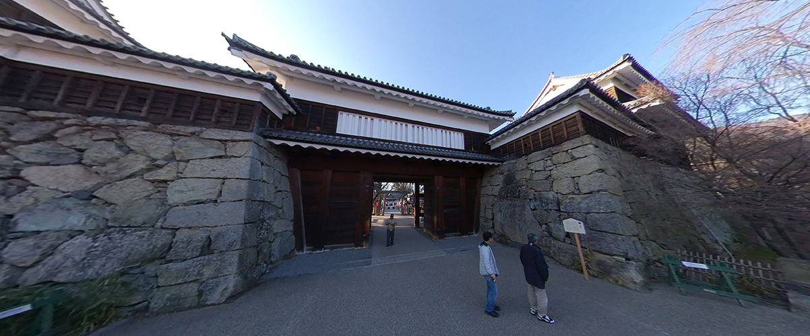

←スマホからご覧になる場合はこちらから
上田城跡公園（うえだじょうせきこうえん）は、長野県上田市にある
上田城を中心に整備された都市公園（総合公園）である。
上田城の本丸、二の丸を中心に市民会館、プールなどが整備され市民の憩いの場となっている。
また、毎年4月上旬から5月上旬にかけての観桜シーズンには「上田城千本桜まつり」が催され、全国から花見客が訪れる。
NHK大河ドラマの真田丸の主人公、真田信繁（幸村）の父、真田昌幸によって築城された上田城は
第一次・第二次上田合戦で徳川軍を二度にわたり撃退した難攻不落の城として知られています。
日本百名城 二十七番・日本夜景遺産に認定されている。
上田城千本桜まつり
戦国の名城を埋め尽くすように、約1,000本の桜が咲き誇ります。
お城に映える桜、お堀の水面に映る桜など、城と桜の美しい景色をお楽しみください。
また期間中は様々な催し物が行われ、夜は上田城跡のライトアップも行われています。